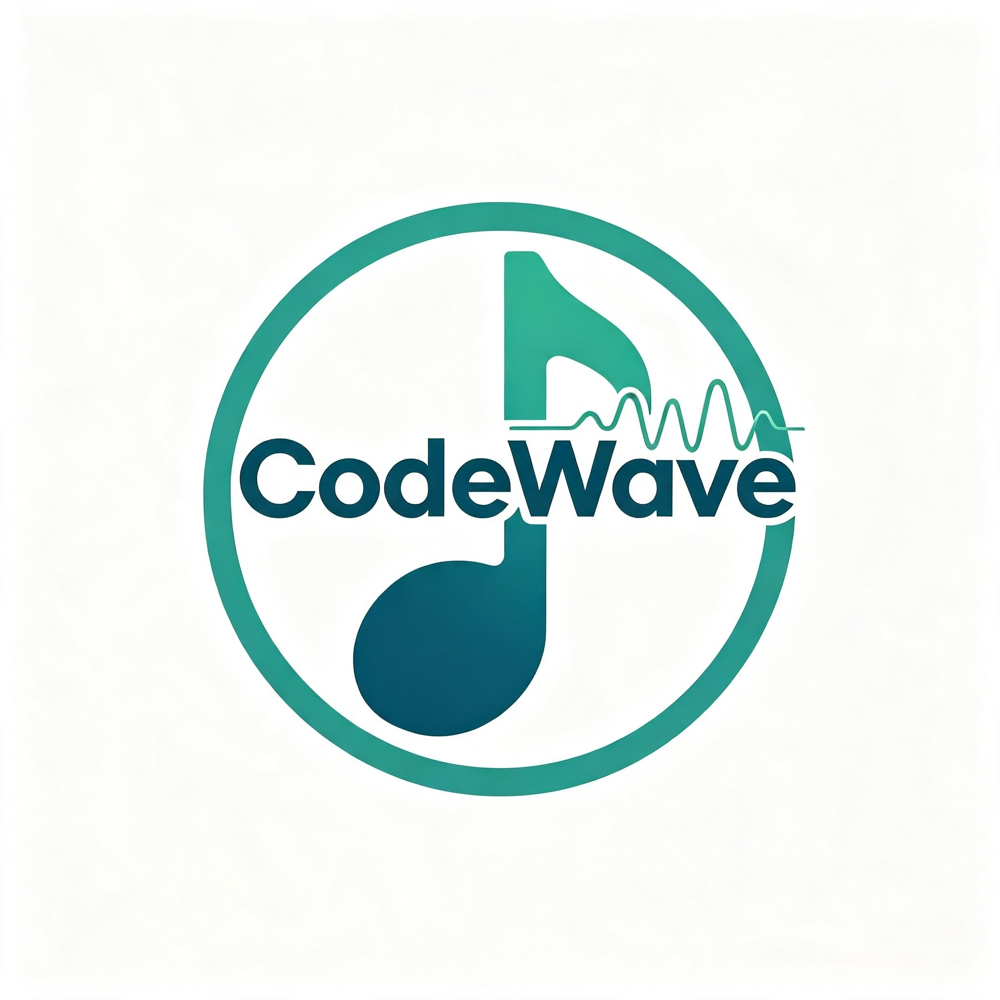

Musica Que Optimiza El AprendizajeRecomendaciones que te pueden interesar sobre musica para concentrarte.
Explorar recomendacionesIdeal para estudiar y leer con concentración prolongada. Su estructura sin letra ayuda a mantener el enfoque en textos largos o temas complejos.
🎧 EscucharPerfecta para tareas repetitivas y trabajo administrativo. Su ritmo constante acompaña sin exigir atención, ideal para tareas mecánicas.
🎧 EscucharLluvia, olas del mar o viento entre árboles te ayudan a relajarte y bajar el estrés, especialmente antes de dormir o en pausas activas.
🎧 EscucharFavorecen la meditación y un estado de relajación profunda. Recomendadas para desconectar la mente antes de descansar.
🎧 EscucharApoyan la resolución de problemas complejos y la programación, ayudando a mantener un estado de alerta y enfoque activo.
🎧 Escuchar